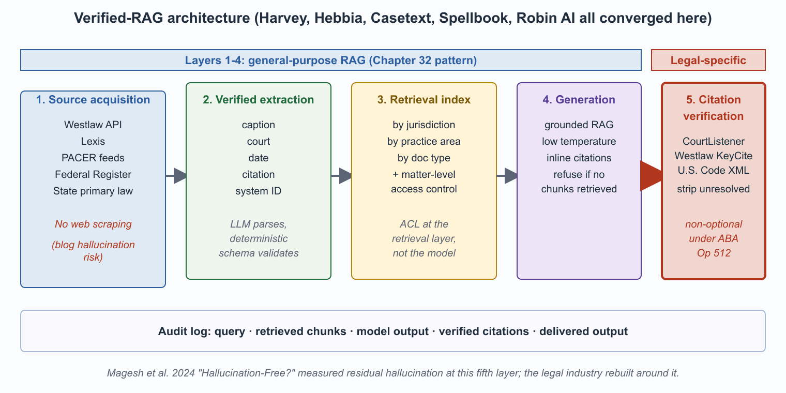

"Verified RAG is just RAG with the promise that the citation is real. The promise is load-bearing."
Rag, Verified-Retrieval-Architect AI Agent
The dominant 2026 architecture for serious legal LLM applications follows a five-layer verified-RAG pattern. Layers one through four are general-purpose retrieval-augmented generation (the same pattern used in customer support, technical Q&A, and internal knowledge search). Layer five, programmatic citation verification against authoritative source systems, is the legal-specific requirement and is non-optional under current bar guidance. This section walks through each layer, the engineering decisions inside it, and the trade-offs that distinguish a defensible deployment from a fragile one.

Prerequisites
This section assumes familiarity with the RAG architecture from Chapter 32 (chunking, retrieval, generation, grounding) and with the failure modes catalogued in Section 67.2. The verification layer described here is a specialization of the broader grounding strategies from Section 35.3.
The dominant 2026 architecture for serious legal LLM applications follows a five-layer pattern:
- Source acquisition from authoritative providers (Westlaw, Lexis, court PACER feeds, regulatory FTP feeds). No web scraping.
- Verified-extraction layer that pulls structured citations and provenance (case caption, court, date, citation, source URL or system ID) for every document.
- Retrieval index with jurisdiction, practice-area, and document-type metadata, plus matter-level access controls.
- Generation with the grounded RAG pattern: produce only with retrieved chunks, refuse if none retrieved, attach citations.
- Citation verification that programmatically resolves every cited authority back to its source system and flags any that fail.
This is just Chapter 32's RAG plus the explicit verification step. The verification step is what distinguishes legal from general-purpose RAG.
- Source acquisition. Authoritative providers only (Westlaw, Lexis, PACER, agency FTP). No general web scraping.
- Verified extraction. Structured citation provenance per document: caption, court, date, citation, system ID.
- Retrieval. Index keyed by jurisdiction, practice-area, and document-type metadata, with matter-level access controls.
- Generation. Strict grounded RAG: produce only from retrieved chunks, refuse if none retrieved, attach inline citations.
- Citation verification. Every cited authority is programmatically resolved back to its source system; any unresolved citation is flagged before delivery.
Layers 1 through 4 are general-purpose RAG. Layer 5 is the legal-specific requirement and is non-optional under current bar guidance.
Layer 1: Source Acquisition
Westlaw's citation service KeyCite, which underpins most Layer 5 verification stacks, was launched in 1997 and uses the same color-coded flag system today that it did then. The red flag (case overruled) was reportedly chosen because the marketing team thought yellow looked too cheerful; the system still uses a 12-year-old PNG of a comically large red flag that has somehow survived three platform rewrites.
The corpus shapes the answer. A legal LLM trained or retrieving over a general web crawl will produce confidently-cited authorities that do not exist, because the crawl contains blog posts, summaries, and outdated commentary that look like primary sources. The corpus that works in production is sourced from contracted feeds or licensed providers: Westlaw API for U.S. cases and statutes, Lexis for the parallel coverage, PACER for federal court docket access, the Federal Register API for regulatory text, and the relevant state-level primary-law repositories. No general web scraping; the marginal coverage is not worth the verification cost.
Layer 2: Verified Extraction
Every document acquired in Layer 1 passes through an extraction pipeline that produces structured metadata: caption, court, date, citation, source-system identifier, and (for cases) the procedural posture and the holding. This metadata is what makes Layer 5 verification possible. The extraction itself can use an LLM (frontier models are good at parsing legal-document structure) but the output is validated against deterministic schemas (a federal case caption has a court, a docket number, a date, a citation format) before it enters the index.
Layer 3: Retrieval With Matter-Level Access Control
The retrieval index is keyed on jurisdiction (federal, state, circuit), practice area (M&A, litigation, IP, regulatory), and document type (case, statute, regulation, treatise, internal memo). Matter-level access controls are critical: the index must enforce that documents belonging to Matter X are only retrievable for queries authenticated as working on Matter X. The architectural choice that supports this is per-matter retrieval scopes that the LLM cannot override (the access control runs at the retrieval layer, not the model layer).
Layer 4: Generation With Strict Grounding
The generation step uses the standard grounded-RAG pattern: produce output only from retrieved chunks, attach inline citations to specific chunks, refuse the query if no chunks meet a relevance threshold. The prompt template encodes the refusal explicitly ("If the retrieved passages do not contain information sufficient to answer the question, respond with 'I cannot answer this from the available materials' and stop"). The temperature is set low; sampling is deterministic where possible to support reproducibility.
Layer 5: Programmatic Citation Verification
This is the legal-specific layer. After the LLM produces a draft answer with citations, a verification routine extracts every citation and resolves it against an authoritative source. For U.S. cases, the resolver queries the Westlaw or CourtListener REST API for the case by citation, confirms that the case exists, that the parties match, and that the cited holding actually appears in the cited section. For statutes, the resolver hits the U.S. Code XML feed or the equivalent state-level service. For regulations, the Federal Register API. Citations that fail to resolve are stripped from the output and replaced with a placeholder ("[citation could not be verified; please research manually]") that prevents the unverified citation from ever reaching a client or court.
The implementation effort for Layer 5 is non-trivial. Citation formats vary across jurisdictions, parallel citations need to be reconciled, and the authoritative APIs are themselves imperfect (CourtListener is comprehensive but lags Westlaw; Westlaw is comprehensive but costs more). Most major legal-LLM vendors maintain their own citation-resolution service as a competitive differentiator; in-house deployments at large firms typically build on CourtListener for case law and the GovInfo API for statutes and regulations.
The five-layer architecture above is descriptively, not normatively, dominant. Every major legal-LLM vendor (Harvey, Hebbia, Casetext, Spellbook, Robin AI) has converged on a variant of this pattern, and the in-house deployments at major firms look similar. The reason is not that the architecture was designed top-down; it is that every other architecture failed in production and got rebuilt. The hallucinated-precedent problem cannot be solved at the model layer (frontier models still hallucinate occasionally), so it must be solved at the verification layer. The bar's competence and supervision rules cannot be satisfied by "the model is very good"; they must be satisfied by an auditable verification step. The architecture is the response to a set of operational and regulatory constraints, not a free engineering choice.
Operational Considerations
A production verified-RAG deployment also needs a few things that do not appear in the architecture diagram. First, an audit log that captures every query, the retrieved chunks, the model output, the verified citations, and the final delivered output. The audit log supports both bar-discipline defense ("here is exactly what the system did when the attorney requested this analysis") and internal evaluation ("how often does Layer 5 strip citations?"). Second, an evaluation set of representative questions with expected behavior, run on every model upgrade and prompt change. Third, a feedback loop from attorneys to the platform team: prompts to improve, edge cases the verification missed, citations that resolved technically but were not on point.
What Comes Next
Section 67.5 closes the chapter with the vendor landscape, the related in-book chapters, and the canonical external readings every legal-LLM practitioner should have on file.
What's Next?
In the next section, Section 67.5: Legal LLM Vendors and Further Reading, we build on the material covered here.